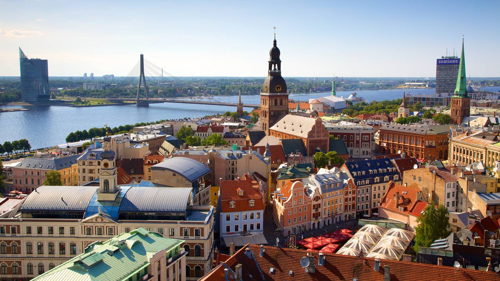
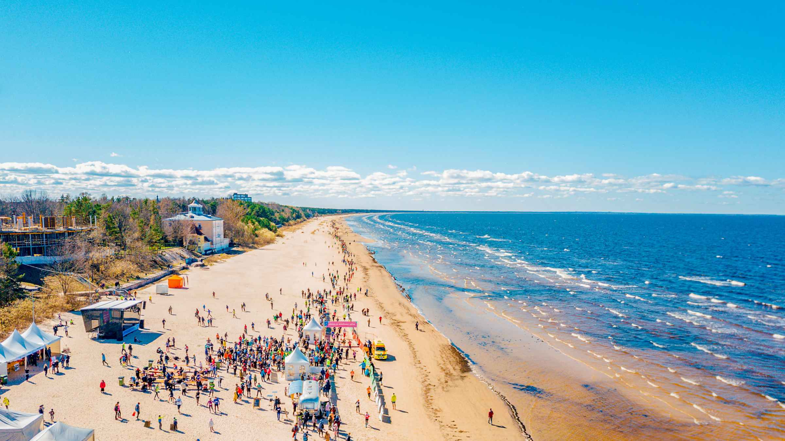
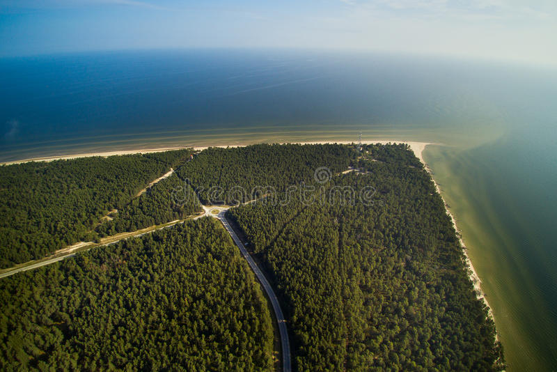

Top 1 vieta Latvijā ir vecrīga. Vecrīga ir Rīgas vēsturiskais centrs, kas ir iekļauts UNESCO Pasaules mantojuma sarakstā un ir lielisks viduslaiku arhitektūras paraugs.
Top 2 vieta Latvijā ir Jurmala. Jūrmala ir kūrortpilsēta Baltijas jūras krastā, kas pazīstama ar garajām smilšu pludmalēm, kūrortiem un restorāniem.
Top 3 vieta Latvijā ir Rundāles pils. Tas ir 18. gadsimtā celta baroka stila pils, kas atrodas Latvijas provinces dzīlēs. Tā celta pēc Kurzemes un Zemgales hercoga pavēles un kalpojusi viņam kā vasaras rezidence.

Top 4 vieta Latvijā ir Gaujas Nacionālais parks. Tas ir lielākais nacionālais parks Latvijā, kas atrodas valsts rietumu daļā. Šeit jūs varat vērot savvaļas dzīvniekus, doties pārgājienos, riteņbraukšanā, kā arī laivošanā un kanoe laivās.

Top 5 vieta Latvijā ir Kolka. Kolka ir vieta, kur satiekas Baltijas jūra un Rīgas jūras līcis, kas padara to par īpaši interesantu vietu ceļotājiem un dabas mīļotājiem. Šeit jūs varat skatīties dažādas putnu sugas, kā arī braukt ar katamarāniem un jahtām.
